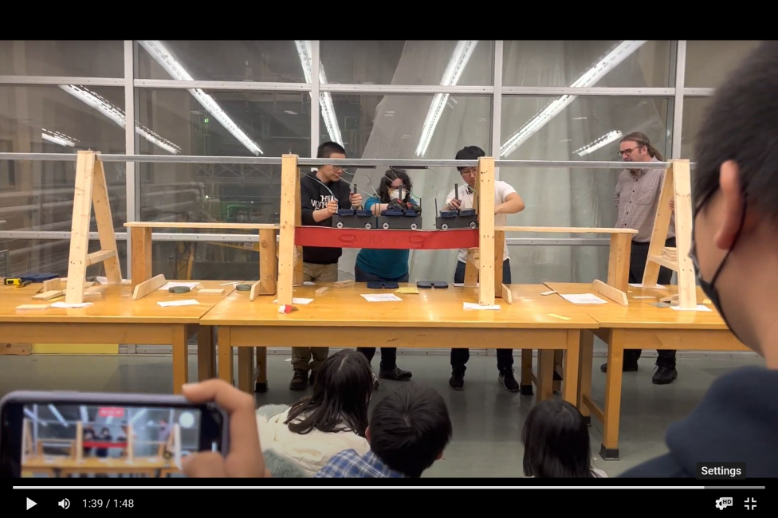
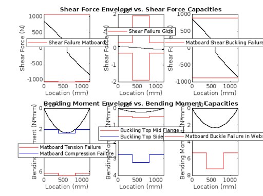
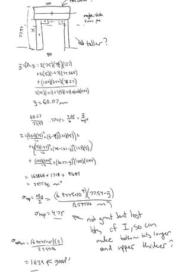
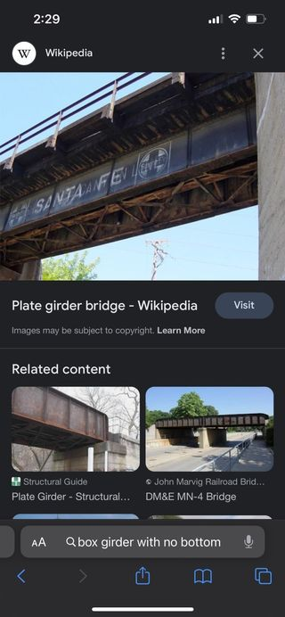
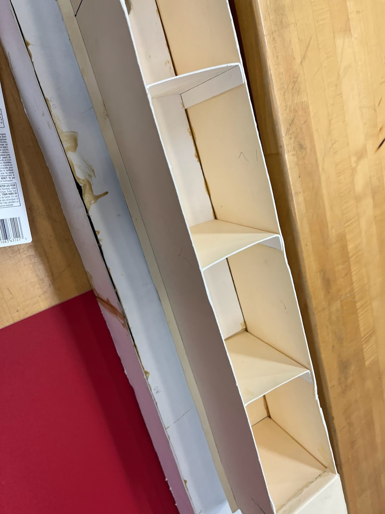
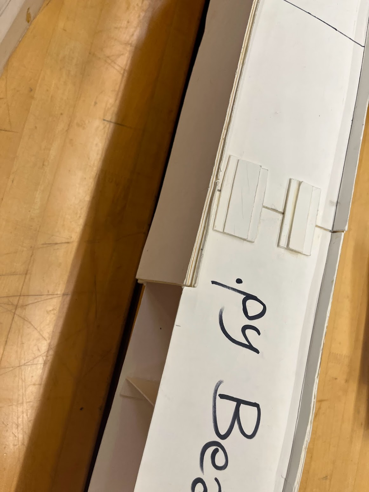
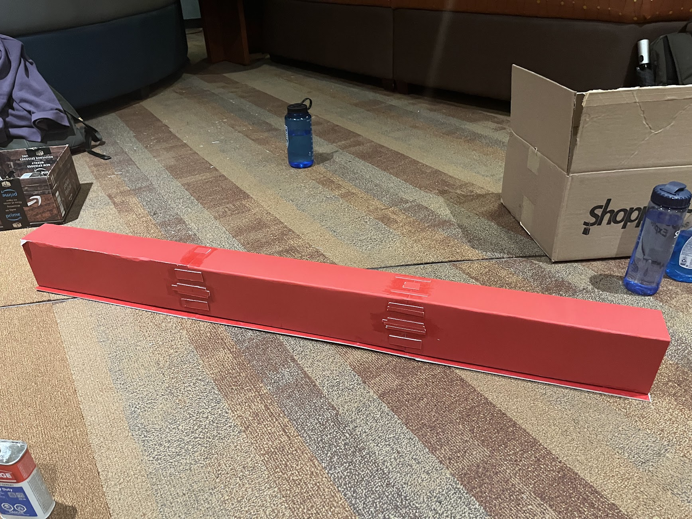
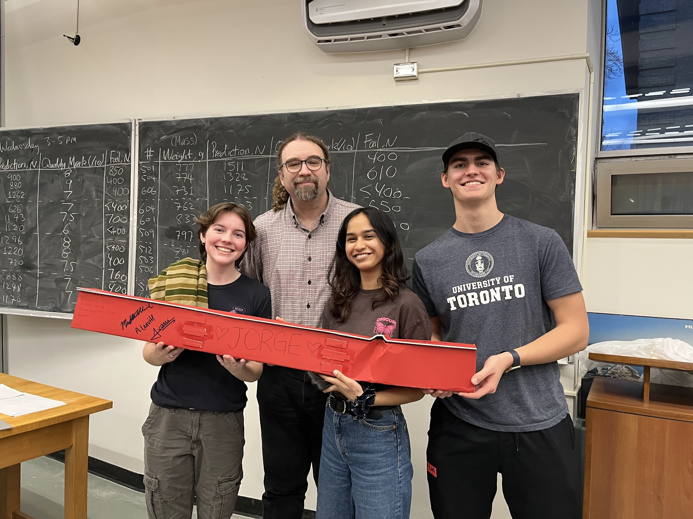

CIV102 Bridge Project
The CIV102 bridge is probably the most iconic project for first year students in Engineering Science at UofT. In the twilight before the finals of the first semester, we suddenly were tasked with designing and building a beam bridge out of matboard in a group of 3 or 4. Here is ours about to fail due to shear and buckling.
We were given basic skeleton code, a design 0, a single sheet of matboard, contact cement, and a dream; a dream to reach the 1kN club. Our first objective was to write the code that would help us iterate our bridge design. I stepped up the most in this early phase by coding in Shear Force Diagrams and Bending Moment Diagrams for a given train car weight and train position, and then iterated it over all 1200 positions to make a plot for each max value at every point over all positions. Then as a team we coded our geometry in with variable cross-sections and calculated our cross-sectional constants, stresses, and safety factors, plotted it all, graphed it, and it looks like this (These are the final graphs. As you can see we predicted our bridge would fail in compression.):

One thought I had during this project that I am proud of was about the material properties of matboard. The references that we had to work on were mostly concrete, as box girders are. However, I noticed the material properties were more similar to steel. Matboard does not have the compressive strength of concrete, so I pitched my team reference designs made of steel and did hand calculations for our mostly restrictive case that seemed promising.
 Unfortunately, I thought of this rather late in our design process and we had pressure to start construction due to time constraints. We also were unsure about the buckling case for our side legs in the cross-section due to the unattached bottom in my proposal. We therefore made a team decision to stick with our hyper-optimized box girder as opposed to this new design.
  In terms of construction, I once again looked to reference designs. The class had a couple bridges left over that had been previously destroyed in testing. This is the one that was good. It told us splicing horizontally as opposed to vertically was a good idea and the diaphragm spacing was incredibly important.
In the end, our construction ended up being our downfall. Our bridge failed first in shear failure in the glue connected our top piece and then buckling once the glue failed. The matboard ended up being harder than we expected to fold, so the tabs in the side legs ended up having less surface on the top piece of our bridge to adhere to. Our bridge held around 700 N which unfortunately was around half of what we anticipated from our calculations, but it came with a valuable lesson: calculations are not the only thing that make up engineering.
Final Design Document: